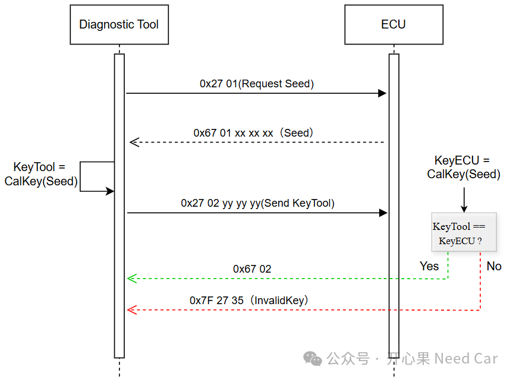
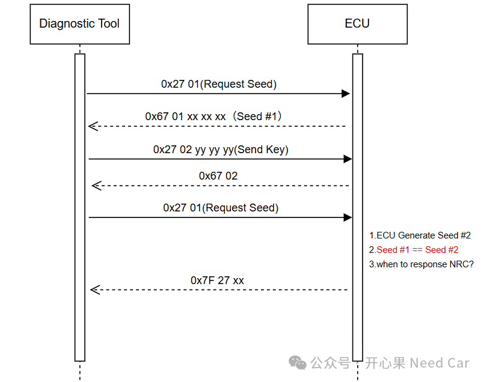

开心果 Need Car · 2026-02-19T06:23:00+08:00 · 微信原文
对于UDS（Unified Diagnostic Services）协议，尤其0x27服务（SecurityAccess，安全访问）牵扯的问题不少。它也是ISO 14229（UDS）中最核心、使用频率非常高的一个功能。其机制基于Seed-Key（种子密钥）认证流程。对控制器的敏感操作，需要先经过0x27服务的“关卡”。如果0x27服务功能被轻易破解或者绕过，意味着控制器的安全性也就无从可言。
本文，聊一个细节点：针对某一安全级，如果seed重复了，是否应该立马否定响应？如果不行，又是为什么呢？
1、0x27服务的安全访问机制
以0x01安全级的访问为例，0x27服务的安全访问机制示意如下：

在这个安全访问机制中，ECU和上位机（Diagnostic Tool）会使用相同的算法分别计算Key，通过对比Key，ECU确认是否应该解锁，进而授权对ECU对应资源的访问。
那么，针对同一个安全级的访问，假设ECU两次产生的Seed值相同，ECU是否因该立即回复负响应，并返回给上位机呢？先给答案，不应该。需要按照正常处理时间处理，但是最终给否定响应。问题示意如下：

发现了Seed #1 == Seed #2 这种异常工况，为什么ECU不能立即回复否定响应呢？这样做的原因，有如下几点：
所以，针对同一安全级，如果ECU产生了同样的Seed，仍需要执行完整验证流程 → 保持一致处理时间 → 返回否定响应（Conditions Not Correct）。
往期精彩回顾